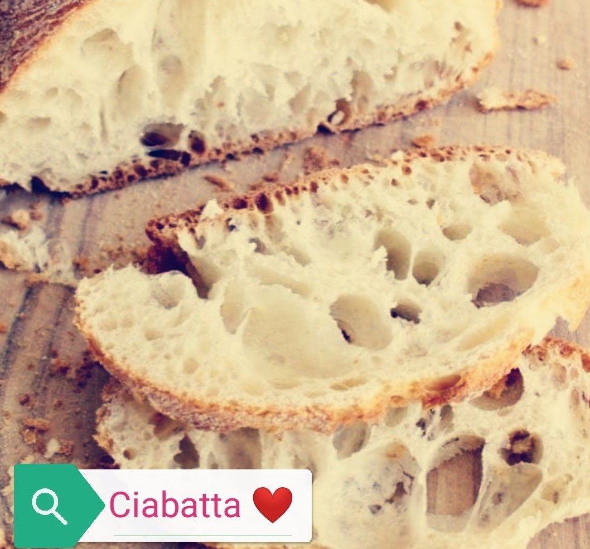
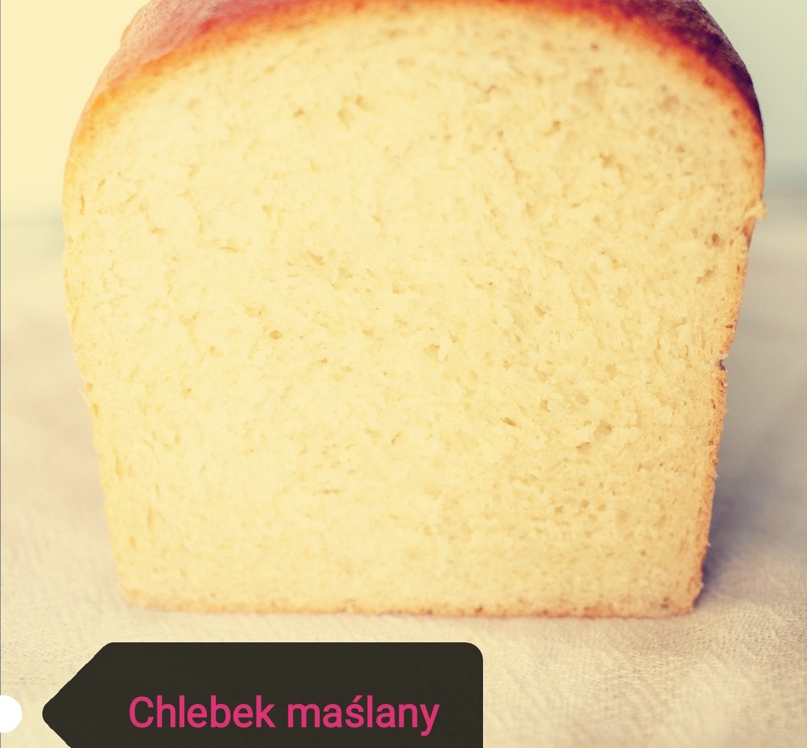

Chlebek dla niecierpliwych
- czas przygotowania: 2.5 godziny
- koszt: niski
- składniki:
- 30g świeżych drożdży (12 suchych),
- łyżeczka cukru,
- 380ml wody,
- 400g mąki pszennej,
- 1.5 łyżeczki soli,
-
dodatki (opcjonalnie): nasiona słonecznika, pestki dyni, kminek.
przygotowanie
Rozczyn: świeże drożdże wymieszać z cukrem, dolać wodę i dodać 3
łyżki mąki. Wymieszać i odstawić w ciepłe miejsce na 10 minut do
wyrośnięcia. Po tym czasie dodać do mąki. Suche składniki
wymieszać razem, dodać wodę/ rozczyn i wymieszać dokładnie.
Odstawić do ciepłego miejsca na godzinę, po tym czasie zamieszać
dokładnie i odstawić na kolejne 1.5 godziny. Piekarnik nagrzać do
maksymalnej temperatury. Keksówkę wyłożyć papierem do pieczenia i
wylać do niej ciasto. Odstawić na 10 minut, żeby podrosło. Wstawić
do piekarnika na środkowy poziom. Po 5 minutach przykryć folią
aluminiową i piec przez 45 min.
Puszysta Ciabatta
- czas przygotowania: 2.5 godziny
- koszt: niski

- składniki:
- 450ml wody,
- 35g świeżych drożdży (13g suszonych),
- 450g mąki pszennej,
- 120ml wody,
- 15g soli,
- 300g mąki pszennej,
- oliwa z oliwek.
przygotowanie
Rozczyn: świeże drożdże wymieszać z wodą i mąką. Wymieszać i
odstawić w ciepłe miejsce na 10 minut do wyrośnięcia. Po tym
czasie dodać resztę wody, mąkę i sól i wyrabiać przez 10 minut, aż
ciasto przestanie się kleić do rąk. Miskę wysmarować dwoma łyżkami
oliwy, wsadzić cisto, przykryć i odstawić w ciepłe miejsce na 10
minut. Po tym czasie odkryć ciasto i dobrze zagnieść i znowu
odstawić na 10 minut. Czynność powtórzyć jeszcze dwa razy, a
następnie posypać blat mąką, wyłożyć ciasto, rozprowadzić palcami
na kształt prostokąta i podzielić na trzy części. Przenieść na
blachę do pieczenia wyłożoną papierem do pieczenia i wstawić do
nagrzanego na 270oC piekarnika na
Chleb maślany prawie tostowy
- czas przygotowania: 3 godziny
- koszt: niski

- składniki:
- 25g świeżych drożdży (10g suszonych),
- 450g mąki pszennej,
- łyżeczka cukru,
- - 200ml ciepłego mleka,
- 15g soli,
- 100g masła.
przygotowanie
Rozczyn: świeże drożdże wymieszać z ciepłym mlekiem, roztopionym
masłem i 3 łyżkami mąki Wymieszać i odstawić w ciepłe miejsce na
10 minut do wyrośnięcia. Resztę mąki przesiać do miski, wymieszać
z solą, dodać rozczyn i wyrabiać przez około 15 minut, do
uzyskania sprężystego ciasta. Przykryć i odstawić do wyrośnięcia
na godzinę. Po tym czasie zagnieść i odstawić na kolejną godzinę.
Keksówkę wysmarować masłem i posypać mąką. Z ciasta uformować
wałek i włożyć do keksówki. Odstawić na 45 minut, żeby podrosło.
Piekarnik nagrzać do 200oC i wstawić chleb na 40 minut.